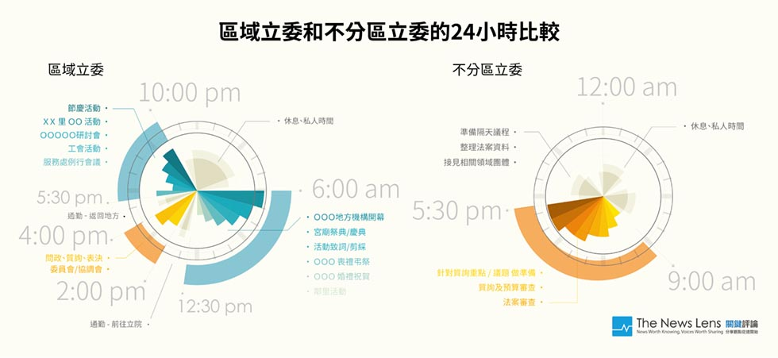
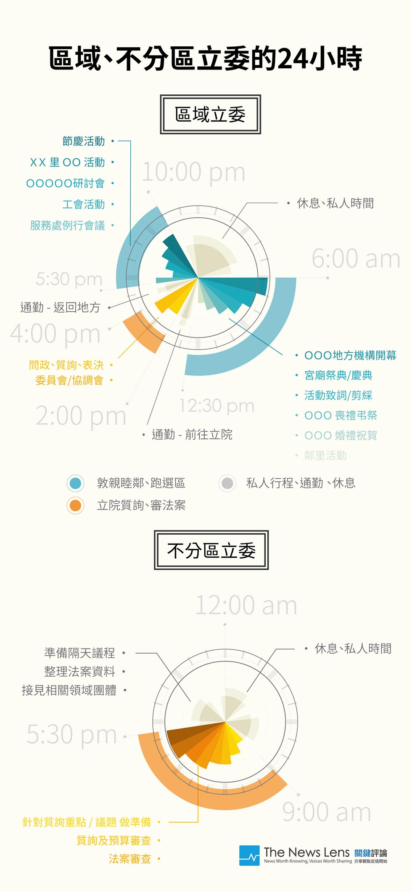

細數立委的24小時：我們的委員是否把國會議員「做小了」？
採訪：羊正鈺、李牧宜
明年一月要選舉了，大家可能知道除了選總統之外，這次還要選出我們國會最高殿堂的「立法委員」。
選民看似只是走到投票所裡蓋幾個章就沒事了，但你可能不知道的是，根據中選會明年度預算書，為辦理總統及立委選舉，政府預計花費新台幣7億7千3百萬元；若加上各地選委會行政業務費及政黨競選經費補助，明年度與選舉相關預算，合計超過17億元。
花了這麼多納稅人的錢，你知道立委究竟都在做什麼嗎？
TNL透過採訪多位不同政黨、類型的國會助理，發現除了那些「闌尾（註）」之外，以一天24小時來看，立委卻有這幾種類型：
身為不分區立委的助理A解釋道，「一般來說，在會期裡一週的一三四是委員會；二五則是院會。其中一三四的委員會，早上會是最緊繃的，有關質詢重點、議題都得會花很多時間找資料、準備，或是配合黨團開記者會等。而二五院會，從早上到下午2～3點之前都在立法院，結束後才會回地方跑選區。」
「在會期中，委員2/3的時間、精神、功夫都在立法院，也非常注重問政品質、和自己上台質詢的表現。」但是真的每個立委都是這樣嗎？
國會助理B則指出，「以區域立委來說，一天可能只有4～5個小時上台北跑國會、8～9個鐘頭都在跑地方，若立法院有重要會議要開，或是表決之類的重要行程，可能一整天都在立法院，至於跑地方則要留在晚上。」
助理C表示，「我們委員每天至少五點半、六點就起來了，大部份時間甚至起得比助理還早。而為了多跟地方上的『頭人』見面，最晚能跑到半夜兩三點。因為每個選民的事情都是大事，都必須花時間去理解。」

如果是中南部的區域立委，行程到底有多緊湊呢？
助理C如數家珍的道來，「每天早上5點多出門，出門先跑公祭行程。我們委員非常看重公祭這件事情，因為別人家在辦喜事的時候，去參加只是錦上添花，但當自己有親人過世，身為委員必須去看看他們有沒什麼需要什麼幫忙。」
「緊接著，8點多搭高鐵，10點多開始在立法院質詢；質詢完，委員會開會；中午時間，安排協調會。下午在趕著搭高鐵回選區，就直接到服務處，開始跑行程，包含節慶活動、工會活動等。回到家都接近甚至超過12點了。至於非會期期間，可以說整天在地方選區。」
如此看來，區域立委主要還是專注在「選區」，尤其是因應各種時節跑「地方活動」，例如媽祖遶境活動、七月中元節 、中秋節、過年等，事實上更多的是「跑紅白帖」...而不分區立委就比較沒有選區壓力，通常除了在立法院開會，也會花不少時間和所屬領域例如醫藥、社福、勞工等團體互動。
立委們對於每天焦頭爛額的『跑紅白帖』，真的是甘之如飴嗎？
助理D認為，「所謂的『跑紅白帖』在台灣是很必要的，基本上都會區可能比較好一點，但對中南部的立委來說很重要。」
「大體上來說，中南部選民會特別在乎自己親人過世、晚輩結婚等的婚喪喜慶是否有『有頭有臉』的政府官員來參加。若心中期盼的人都沒有出席，或許下一次就不會把這票投給他了。」
助理B則無奈的表示，「區域立委自己要抉擇，但中南部立委通常都是選擇留在選區，因為可能我這個下午人不在選區，選票就會差很多。中南部的選民比較在乎『面對面的感受』，他們不會在乎你看護了多少選民的荷包。因此相對於台北的空氣選票多的地方，中南部委員必須要去顧好地面選票。」（選票分為兩種，一是空氣票，二是地面票。空氣票來自知名度及政策主張，地面票來自組織動員、派系運作。）
反過來說，就是如果今天台灣的選民在乎的是立法委員在立法院的表現，那委員們當然整天都在立法院「問政」；言下之意，關鍵是選票，以及選民真正在乎什麼。
助理D指出，「我覺得『跑紅白帖』是台灣一個累積的特殊的風俗，像是在美國，就沒有聽過國會議員在跑選區的啊，在這種制度下，有時候不得已可能要犧牲一點點品質。」
但也有不同觀點認為跑選區有其必要性，助理E就說，「準備行政機關的問政資料和解決選民的問題，這兩者也可能是相輔相成的，選民問題若牽涉到比較普遍的議題，那可能會成為問政資料之一，但如果很個人、很細微的問題，有時候也就不會pass到委員那裡了。」
也就是在時間安排上不分區和區域立委還是有很大的差異。不分區委員大多是以處理質詢、審法案、協商為主，比起區域立委，他們比較沒有輔選或是跑選區的壓力。而區域立委就是早上質詢、下午全部放空城，這樣的狀況到了選舉前的第八會期更是變本加厲。


第八會期的立法院真的是空城嗎？
助理F表示，「很現實的是，我如果選不上連立委都當不了！所以難免有很多人就是早上簽個到，然後就去搭高鐵回選區了，常常一天搭個兩三趟高鐵都不是不可能。」
他還說，像這次一月多就要選了，甚至已經傳言說12月15號就要休會了（法定這個會期應該是要到12月底才結束）， 「甚至你現在去看各個委員辦公室，很多門都是關起來的，裡面根本就沒人，所有人力都到選區助選去了。」
至於立法院是不是空城？「其實你們自己去各個委員會一看就知道的，騙也騙不了人啊！」但助理們大多還是認為這樣的現象很難避免。
「台灣的立法委員說可憐也是可憐， 以一個國會議員的規格來說，跟其他國家比我們確實是把立委『做小了』，明明是應該是一個審查國家政策、法案的角色，卻得在地方做跟議員一樣的事、路燈修好了還得跟里長一起去看，只為了那『見面三分情』......」
立法委員的究竟該做什麼？
憲法第63條則載明「立法院有議決法律案、預算案、戒嚴案、大赦案、宣戰案、媾和案、條約案及國家其他重要事項之權。」而根據「立法院職權行使法」對立法委員之職責，亦有更明確與具體的描述。
「什麼樣的選民，就會有什麼樣的立委！」國會助理C說得直接。
換言之，身為選民該思考的是，我們究竟想要一個什麼樣的立法委員？如果憲法上是如此明定立委的職權，透過訪談，我們發現納稅人每年花了近千萬養一個立法委員，而他們每天24小時願意、不願意做的那些事，真的是我們期望的嗎？
我們要的是一個可能每天花2/3的時間「跑紅白帖」、汲汲營營地跟選民「搏感情」的民意代表；還是花更多時間代表選民在立法院審法案、預算，監督行政的委員？
註：對於那些不認真的闌尾們，歡迎參照▼
公督盟「爛立委」評鑑結果出爐，來看看你家選區的委員有沒有上榜？
影片版：
責任編輯：羊正鈺
核稿編輯：楊士範
核稿編輯：楊士範
SHARE：